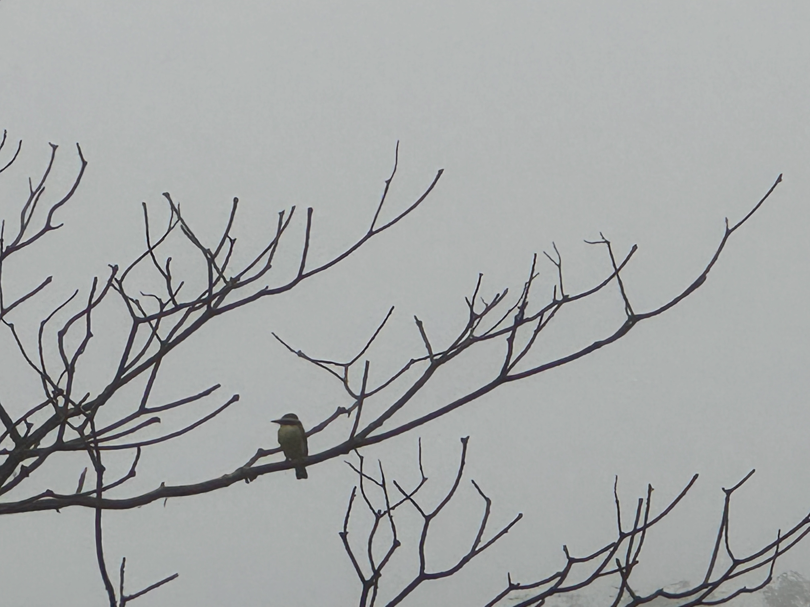

Bitácora
Un poco de todo, antrópico ~ entrópico.

Pitangus sulphuratus vivo parado en estructura de Solanum riparium comido por hongosEstructura de post
Título. Categorías. Descripción breve del contenido. Imagen repetida en contenido. Un texto explicativo dentro del post. Fecha de producción, fecha de modificación y categorías, firma humana, automatizadas, en formato e idioma de origen.
prueba de presentación
Presentaciones Web
Multimedia
Entrenamiento
.qmd
IA Prompts

elementos de investigación
Marco Conceptual
Escala de Aproximación
Plan de Investigación
Ecosistema de Investigación
Entrenamiento
Aprendizaje
Proceso Interactivo
fotos 0.5, 1, 2 y 3 x
Fotografía
Fotografía con Teléfono Celular
Fotografía de Naturaleza
Interpretación Ambiental
Escala de Aproximación
prompt nube de palabras
Métodos
Clasificación
Tipos de variables
Ecología de Texto
Visualización
IA Prompts
Interacción con IA
Diseño de Consignas
Ingeniería del Aprendizaje
Entrenamiento
nube de palabras
Métodos
Clasificación
Tipos de Variables
Ecología de Texto
Visualización
Diseño de Consignas
R Shiny app
Ingeniería del Aprendizaje
Entrenamiento
No matching items